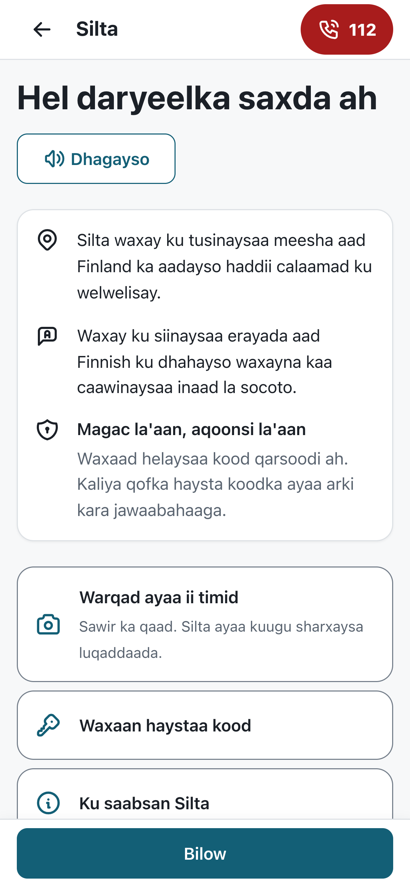
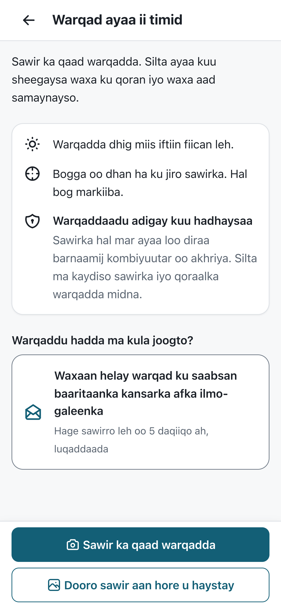
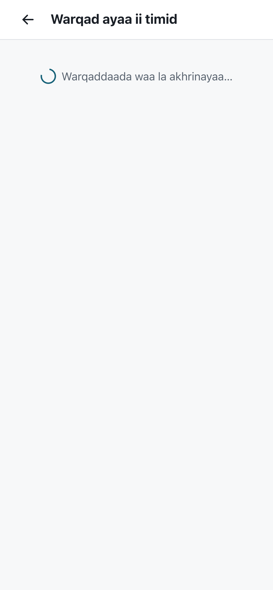
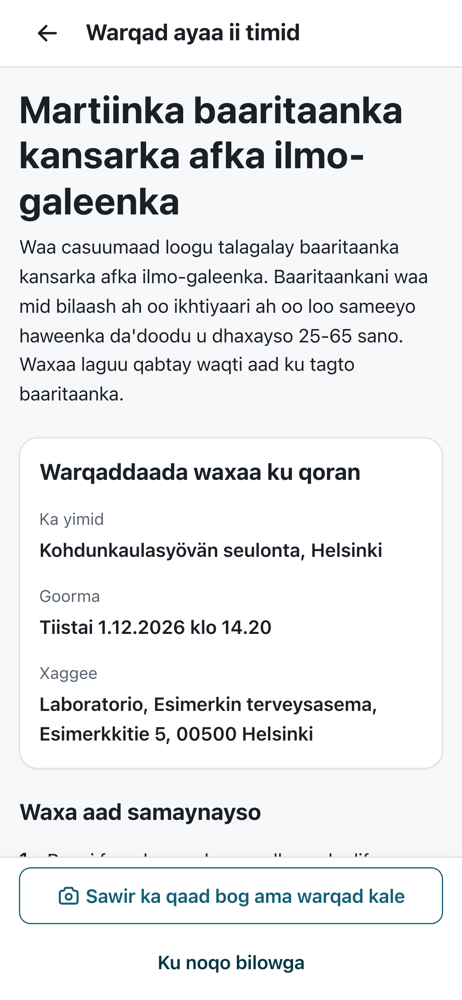
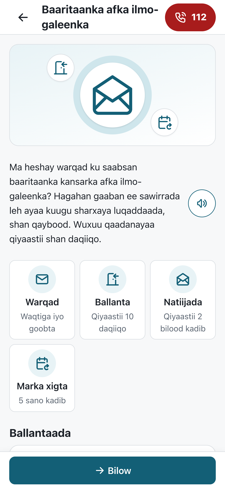
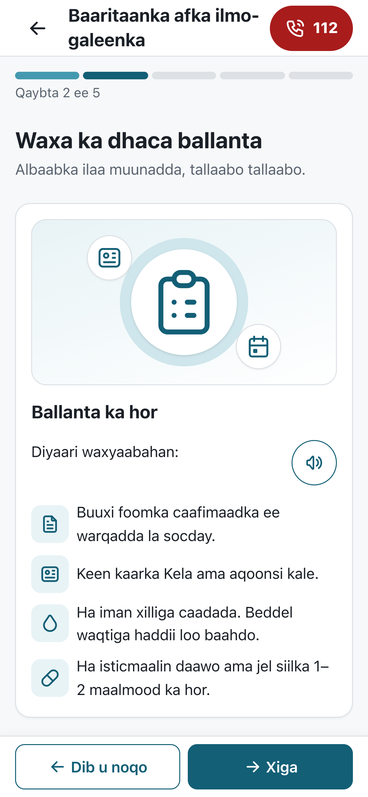
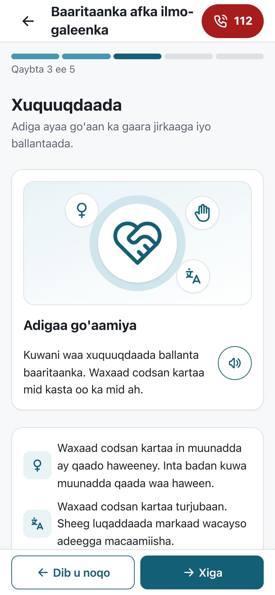
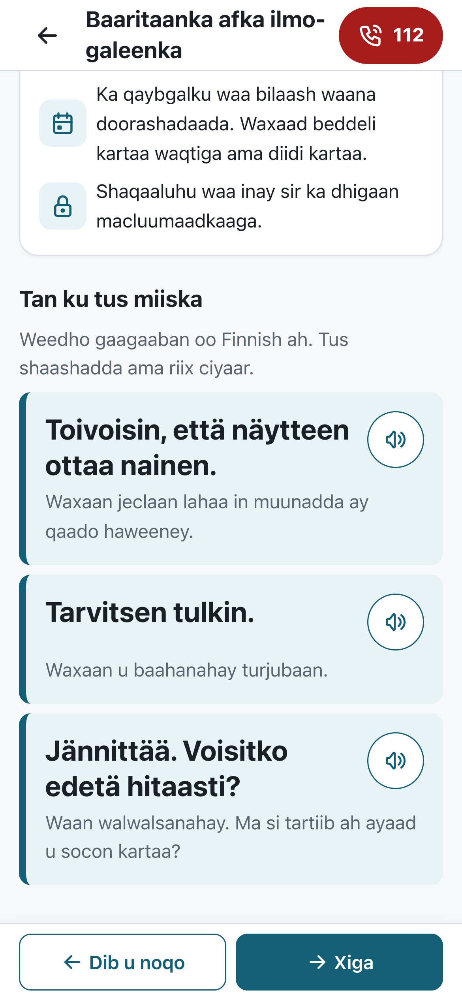

Silta · pitch video · assets for Descript
Twelve motion-graphic clips built from Silta's real screens, in the order of the 2-minute edit, plus overlays, the app's own audio and the raw screens. All clips are 1920×1080, 30 fps, MP4, without sound.
Where the files are: content/materials/video-assets/ in the presentation repo, in the folders clips/, overlays/, audio/, screens/ and stills/. Drag them into Descript from there; this page is for watching.
Dashed boxes are table-top shots you still film. Each clip builds, then holds its last frame, so trim the tails to the voice-over.
Table top: the letter lands, hands open it. About 4 s.
Table top: the drawer opens, she photographs the letter with her phone. About 4 s.
Table top: the letter on the table next to the phone, the drawer open and empty. About 3 s.
Transparent PNGs at 2×, for laying over the table-top shots or any clip. The checkerboard shows the transparent parts.
Downloaded from the live app's play buttons. Ask Timo whether the Somali clips are human-recorded or ElevenLabs before crediting them.
From the live app, 1170×2532. The same screens in English (en-*) and whole-page versions (*-full) are in the screens/ folder.

so-01-home
so-02-letter
so-03a-letter-reading
so-03-letter-result
so-04-guide
so-06-visit
so-07-rights
so-07-rights-desk